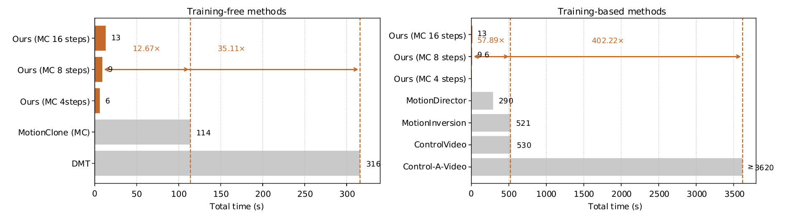
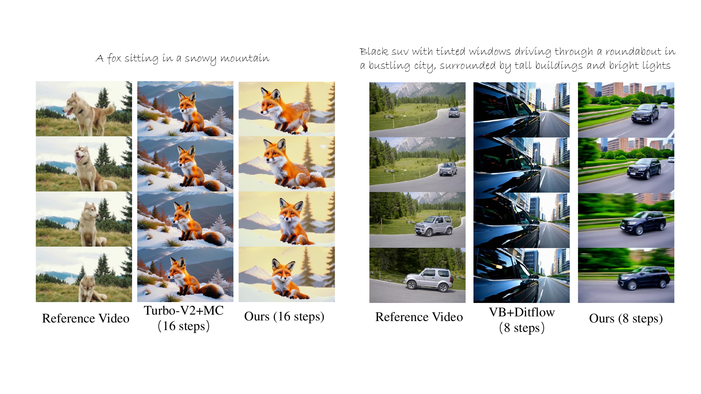
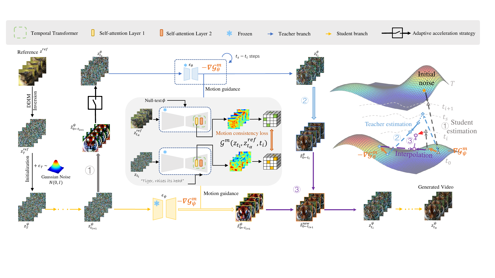
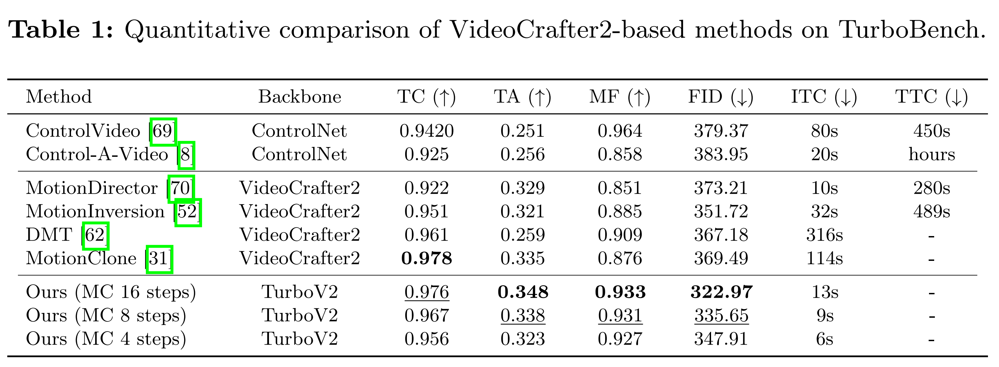
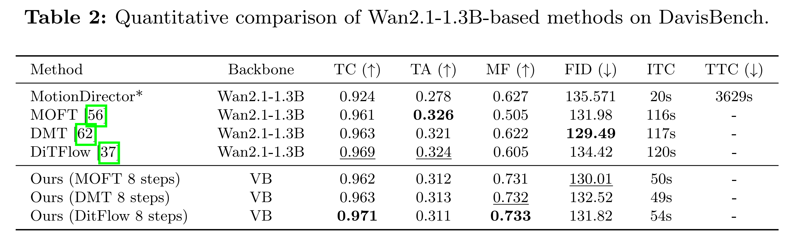
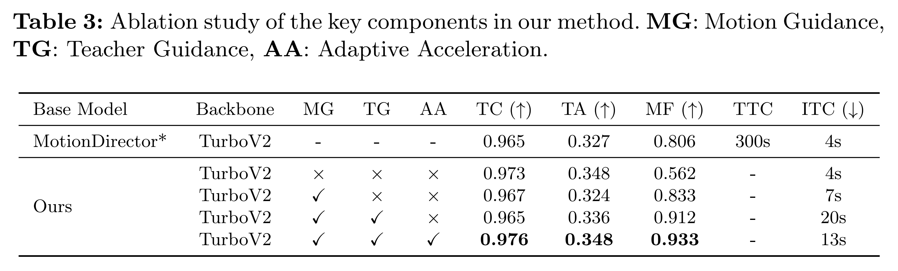
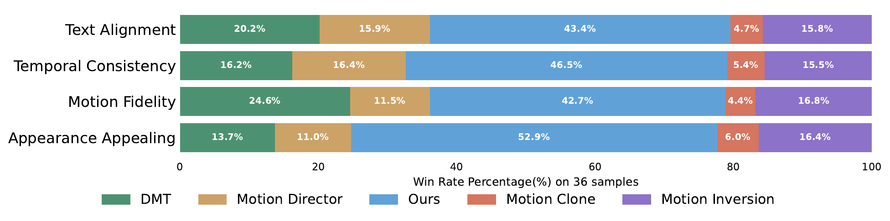

TurboV2
A lion sitting on top of a cliff captured with a zoom out.
Reference Video
MotionEcho 16 steps
MotionEcho 8 steps
MotionEcho 4 steps

Training-free motion customization imposes motion patterns from reference videos onto video generators through test-time computation. Most existing methods target full diffusion models, requiring many denoising steps and high computational cost. With the rise of efficient distilled models, a natural question arises: can test-time motion customization be applied directly to distilled generators with their accelerated sampling and efficiency gains? However, our analysis reveals that existing training-free techniques fail on distilled models. Distillation fundamentally alters the denoising dynamics that prior test-time guidance relies on, and the large denoising steps of distilled generators discard the dense intermediate states that score guidance requires, rendering existing motion control strategies incompatible with fast generation. To address this limitation, we propose MotionEcho, a novel training-free test-time distillation framework that enables motion customization for distilled video generators. The key idea is to correct the student model's sampling trajectory with restricted usage of a high-quality diffusion teacher at inference time. Teacher supervises the student's denoising by re-noising the student's endpoint onto its dense trajectory to form a motion-aligned clean endpoint, then interpolating it with the student's, while an adaptive scheduling mechanism determines when and how much teacher guidance is needed. As a result, MotionEcho restores generative trajectories for distilled video generators via lightweight, adaptive test-time teacher guidance, enabling accurate motion control without compromising generation efficiency. Extensive experiments on multiple distilled video generation models demonstrate that our method significantly improves motion fidelity and visual quality while retaining the efficiency advantages of distilled generation.

Given a reference video, MotionEcho extracts motion priors to initialize the student model with a motion-preserving noisy latent. During inference, the teacher and student models perform motion customization using motion loss gradients, while the distilled student remains the efficient primary backbone. Teacher guidance is applied through prediction interpolation at sub-interval endpoints to correct the student's sampling trajectory. To preserve efficiency, an adaptive acceleration strategy selectively triggers teacher guidance and truncates teacher denoising iterations, allowing the student to generate the final video in a few steps with high motion fidelity.

We evaluate MotionEcho on distilled UNet- and DiT-based video generators using text alignment, temporal consistency, motion fidelity, FID, and inference time. The results show that teacher-guided trajectory correction improves motion fidelity and visual quality while keeping the speed advantage of distilled generation. On TurboV2, MotionEcho remains effective from 16 steps down to 4 steps; on Video-Blade with Wan2.1 teacher guidance, it consistently improves motion preservation over training-free baselines while reducing inference cost. The user study below summarizes human preferences over text alignment, temporal consistency, motion fidelity, and appearance appeal.




@inproceedings{rong2026when,
title={When Distillation Breaks Motion Control: Restoring Generative Trajectories for Fast Video Generators},
author={Rong, Jintao and Xie, Xin and Yu, Xinyi and Ou, Linlin and Zhang, Xinyu and Shen, Chunhua and Gong, Dong},
booktitle={European Conference on Computer Vision},
year={2026},
url={https://euminds.github.io/motionecho/}
}